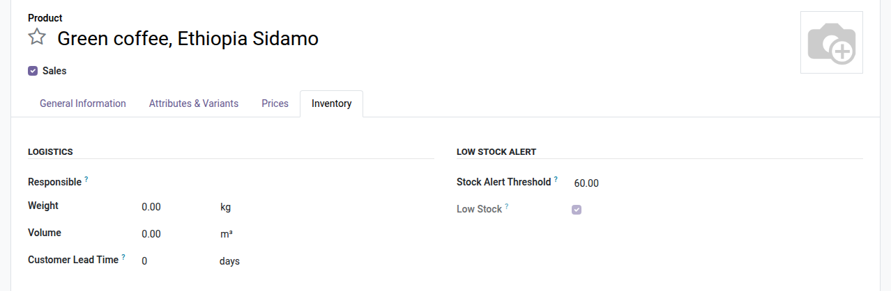
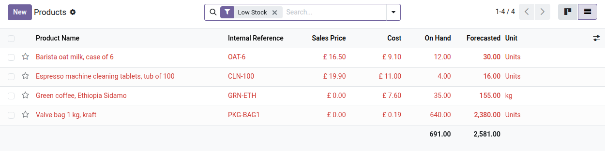
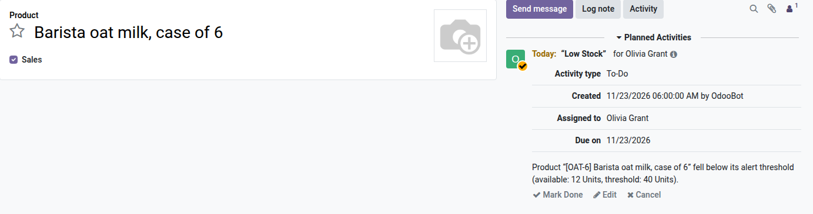

Low Stock Alert
Get warned before you run out — a threshold per product, red rows and a daily activity for the inventory manager, with no technical setup.
Odoo's replenishment rules trigger purchase orders — but they don't warn a human when a product slips below its critical threshold. The result: silent stockouts discovered too late, after a refused delivery or a blocked order line. What's missing is simply a visible signal and a daily reminder for the right person.
What it brings
- 🎯 Custom threshold per product — a simple numeric field in the Inventory tab; setting it to 0 disables the alert.
- 🔴 Red rows in the list — as soon as the available quantity drops below the threshold, the row is highlighted in red so you see it at a glance.
- 🔍 Dedicated “Low stock” filter — isolate every product on alert in one click, with no custom query.
- 📅 Automatic daily activity — a scheduled action creates a “To-Do” activity every day on each product on alert, assigned to the inventory manager.
- ✅ Built-in duplicate prevention — as long as the previous activity is not done, no new alert is created for that product.
In pictures
1. The threshold, on the product's Inventory tab
Sixty kilos for this green coffee: below that, the Low Stock box ticks itself. Left at zero, the product is never on alert.

2. Every product on alert, in one filter
The Low Stock filter keeps the four items under their threshold, in red: oat milk, cleaning tablets, Ethiopian green coffee and valve bags. The forecast column shows what incoming receipts will bring.

3. The inventory manager's morning to-do
The daily check leaves one activity per product on alert, with the available quantity and the threshold in its unit. No second one while the first is open.

Why adopt it
- Open source and self-contained — no external dependency, no third-party service subscription.
- Zero training: the threshold lives in the Inventory tab your teams already know.
- Alerts arrive in native Odoo activities — no extra email notification to configure.
- Duplicate prevention keeps the noise down: one activity per product until it is handled, no daily flood.
LGPL-3 license — compatible with Odoo 18.0. Support : apps@odooskills.com.